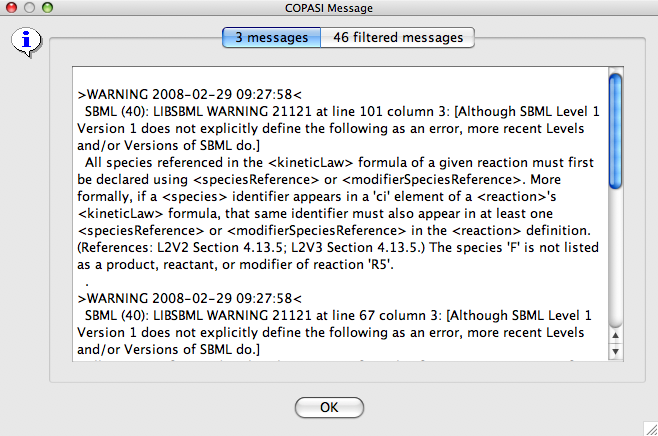

COPASI is able to import
SBML level 1 and level 2 files as well as export SBML level 2 files through the corresponding entries in the File menu. Export of SBML files to Level 1 Version 2 is also enabled, but since SBML Level 1 Version 2 does not support many features of SBML Level 2 and above, export to this level and version will often fail and COPASI should tell you why the export failed.
For the import and export the SBML Model is read with
libsbml and converted to the COPASI model structure and vice versa. On exporting, COPASI converts its native model structure to an SBML model that is again written out using libsbml. Since the SBML model structure is converted into the COPASI model structure upon import, some of the information in the SBML file gets lost because COPASI does not support the corresponding model elements. Examples of data that gets lost are e.g. algebraic rules rules.
Notes and Annotations from the original SBML file should be preserved when you import and reexport an SBML file as long as you do not delete the objects that contain the annotation in COPASI. But still if you have important annotations or notes in your SBML file make a backup of the file before you open it in COPASI since we can not guarantee that they will survive an import/export cycle.
Likewise, SBML does not support all of the elements of a COPASI model so some information from the COPASI model also gets lost when exporting an SBML file. For example tasks, reports and plot definitions are not exported to the SBML file. This is normally not a big problem since the essential parts of a model normally get imported or exported. A consequence however one should keep in mind is that if you import an SBML file into COPASI and later export it again, it might have lost some of the original information. So if your SBML model depends on events, it is not suitable for import into COPASI. This will change in future versions of COPASI.
Current versions of COPASI use a modified libsbml version 3.4.1 which supports SBML files up to Level 2 Version 4. Libsbml 3 also has a lot of built-in tests to check the validity of a model. Upon import COPASI will display most of those errors to the user. Libsbml 3 also gives a lot of warnings, especially concerning units in SBML files, which should help the user in generating better, more consistent models. Even so this is a good thing, it can happen that the real errors are hidden by the large amount of warnings. COPASI now uses a new error message dialog that splits the messages in filtered and unfiltered messages. The unfiltered messages are what the user sees when the dialog comes up. In order the see the filtered messages the second tab in the message dialog has to be selected. If there are no filtered messages, this tab is disabled. In the labels of the individual tabs, COPASI also shows you the number of messages that for the corresponding tab.
|  |
| Error Message Dialog after import of an SBML File |
In the current version, the errors that are filtered are hard coded and they are all warnings that have to do with unit inconsistencies within the model. In future version of COPASI, we will have a mechanism that will let the user manage which error messages should be filtered.
Although COPASI now uses libsbml 3, not all features found in the different versions of SBML are currently supported. If an unsupported feature is encountered during import, COPASI will usually notify the user. Depending on which parts of the model have been ignored, ignored, the result of time course simulations and other tasks might not be what you expect.
One should also be aware of the fact that in COPASI kinetic laws are always functions and a reaction contains a call to one of those functions. Since SBML allows arbitrary mathematical expressions as kinetic laws of reactions, those expressions are converted to user defined functions upon import and the reaction then calls this function. When reexporting such a reaction to SBML, the kinetic law expression will be exported as a function definition and a call to that function in the kinetic law of the reaction.
One notable feature from SBML that is currently not fully supported in COPASI is the delay function. SBML models with calls to the delay function can be imported in COPASI, however, the delay implementation in COPASI will always return NaN for any call to the delay function. In most cases this means that you do not get correct results when working with such a model in COPASI. The reason for importing those models anyway is to allow you to modify the model, meaning to get rid of the delay calls in which case you can work with the model in COPASI.
Another issue with the delay function in COPASI is the fact that COPASI does not allow a call to the delay function to appear in a function definition. This includes function definitions that are created from kinetic law expressions upon import (see above). If COPASI encounters a call to the delay function in a kinetic law expression, the delay call is converted to a global variable which is then passed as an extra argument to the kinetic function. If there are references to local variables within a call to the delay function, those local parameters are also converted to global parameters. If you reexport such a model to SBML, all those changes remain in the model. However, those changes do not change the results you get when you e.g. simulate the model.